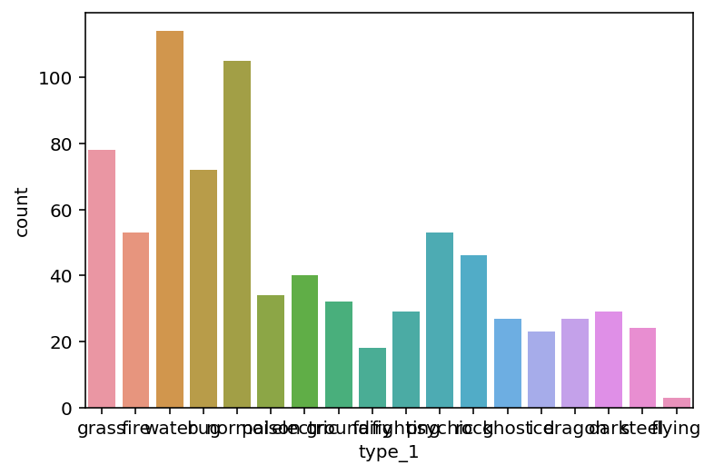
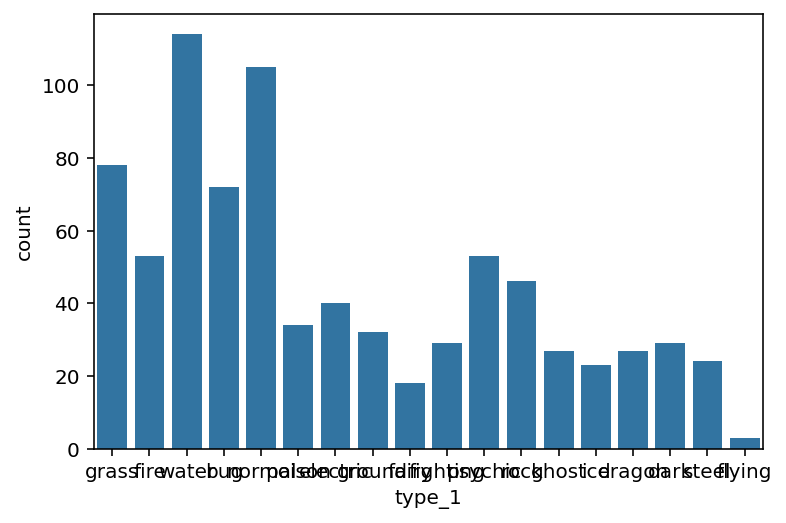
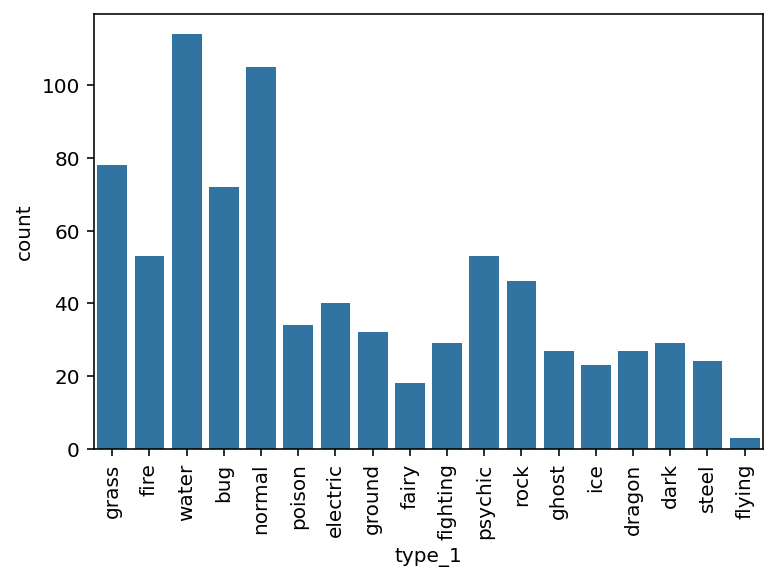
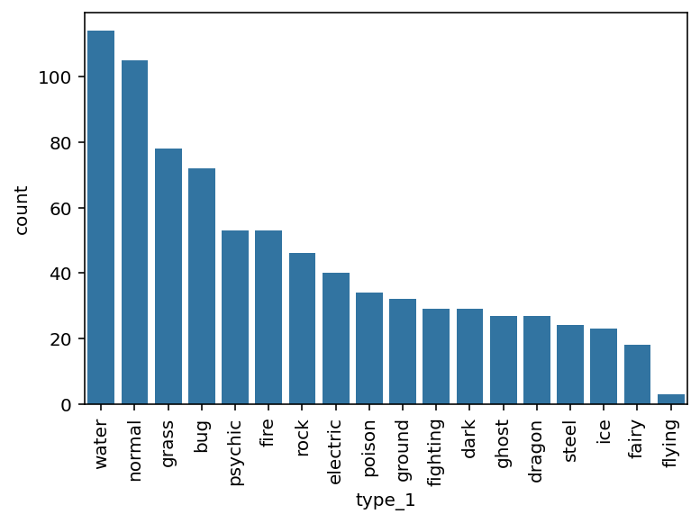

Univariate Exploration¶
Introduction¶
# Imports
import numpy as np
import pandas as pd
import matplotlib.pyplot as plt
import seaborn as sb
# Configuration
%matplotlib inline
%config InlineBackend.figure_format='retina'
# Load data
df_pokemon = pd.read_csv('data/pokemon.csv')
print(df_pokemon.shape)
df_pokemon.head()
(807, 14)
| id | species | generation_id | height | weight | base_experience | type_1 | type_2 | hp | attack | defense | speed | special-attack | special-defense | |
|---|---|---|---|---|---|---|---|---|---|---|---|---|---|---|
| 0 | 1 | bulbasaur | 1 | 0.7 | 6.9 | 64 | grass | poison | 45 | 49 | 49 | 45 | 65 | 65 |
| 1 | 2 | ivysaur | 1 | 1.0 | 13.0 | 142 | grass | poison | 60 | 62 | 63 | 60 | 80 | 80 |
| 2 | 3 | venusaur | 1 | 2.0 | 100.0 | 236 | grass | poison | 80 | 82 | 83 | 80 | 100 | 100 |
| 3 | 4 | charmander | 1 | 0.6 | 8.5 | 62 | fire | NaN | 39 | 52 | 43 | 65 | 60 | 50 |
| 4 | 5 | charmeleon | 1 | 1.1 | 19.0 | 142 | fire | NaN | 58 | 64 | 58 | 80 | 80 | 65 |
# Set base color
base_color = sb.color_palette()[0]
TODO
Bar Chart¶
sb.countplot(data=df_pokemon, x='type_1');

sb.countplot(data=df_pokemon, x='type_1', color=base_color);

sb.countplot(data=df_pokemon, x='type_1', color=base_color)
plt.xticks(rotation=90);

type_order = df_pokemon['type_1'].value_counts().index
sb.countplot(data=df_pokemon, x='type_1', color=base_color, order=type_order)
plt.xticks(rotation=90);

type_order = df_pokemon['type_1'].value_counts().index
sb.countplot(data=df_pokemon, x='type_1', color=base_color, order=type_order)
plt.xticks(rotation=90)
plt.title('Number of Pokemons per Type 1');
plt.xlabel('Type 1')
plt.ylabel('Count')
Text(0, 0.5, 'Count')